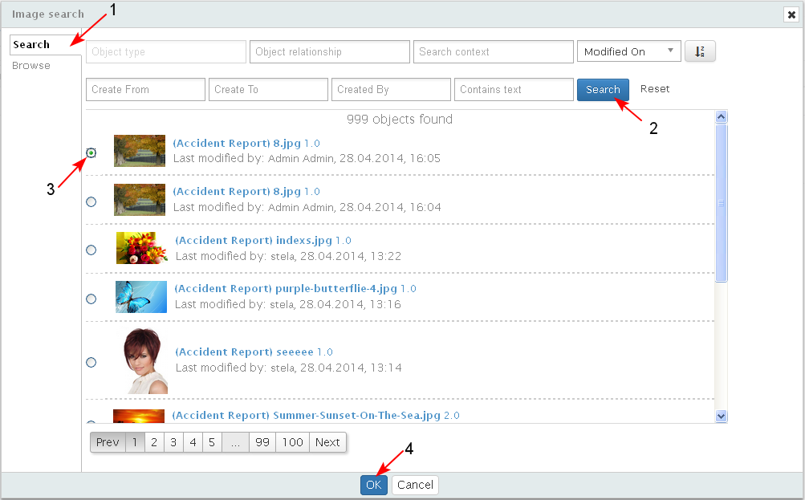

An object could have only one primary image.
- To add a thumbnail for an object, the user selects the action "Add Thumbnail" from the drop down menu of action for the selected object (1-2-3).

- A screen opens where the user searches for an image (1-2-3-4).
Other content different than an image (png, tiff, jpeg, etc) cannot be selected.
Any image could be selected as a primary image of an object.

- The selected image becomes visible as a thumbnail in front of the name of the object.

- A reference of type "Has Thumbnail" is created between the image and the object with the name of the reference under it (1-2-3), visualized in the Related Document and Relationships sections in the object's landing page.

- If an object has got a thumbnail, and the user clicks on "Add Thumbnail" button, then a message is displayed "There is already a thumbnail for the object. Do you want to change it? Yes/ No".

- If the user selects "Yes" then the search screen opens, where the user could search and select for another image.
- When a new image is selected as a thumbnail, the existing link of type "Has Thumbnail" between the object and the image is automatically deleted and a new link of the same type is created between the object and the newly selected image.

- An image could have relations with more than one objects of type"Has Thumbnail", which means that more than one objects could have the same primary image.